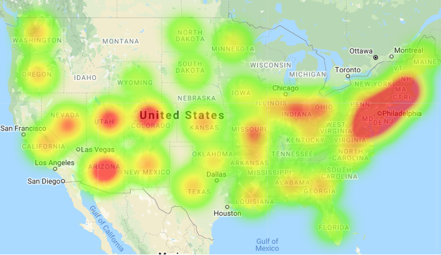

U.S. Air Pollution Report
 Air pollutants are derived from many sources, but are not always visible to the naked eye. According to the United States Environmental Protection Agency (EPA), air pollution can be defined as a combination of gases and particles in the atmosphere that can reach harmful concentrations and have a negative effect on the health of people, animals, and the environment. There have been considerable air pollution prevention and control measures put in place over the years. The focus of this data study is to follow the trend of pollution in the United States over a 17-year period to determine if there is a linear trend in NO2 mean levels in the U.S and if there are significant differences in NO2 mean levels among U.S. regions.
Hypotheses
TEST 1: Null Hypothesis: There is not a linear trend in NO2 mean levels in the U.S. between the years 2000 to 2015. Alternative Hypothesis: There is a linear trend in NO2 mean levels in the U.S. between the years 2000 to 2015.
TEST 2: Null Hypothesis: There is not a significant difference in NO2 mean levels among U.S. regions between the years 2000 to 2015. Alternative Hypothesis: There is a significant difference in NO2 mean levels among U.S. regions between the years 2000 to 2015.